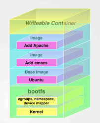
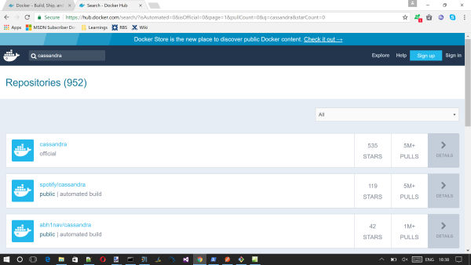
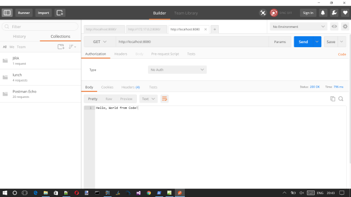
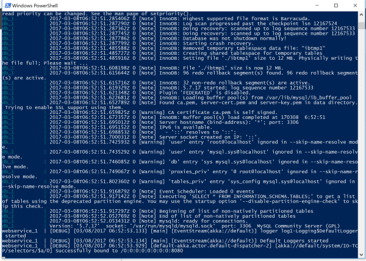
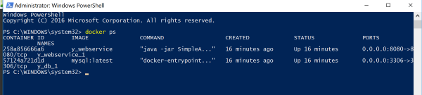
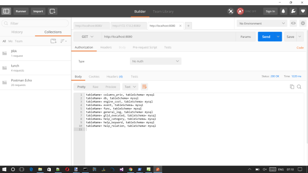
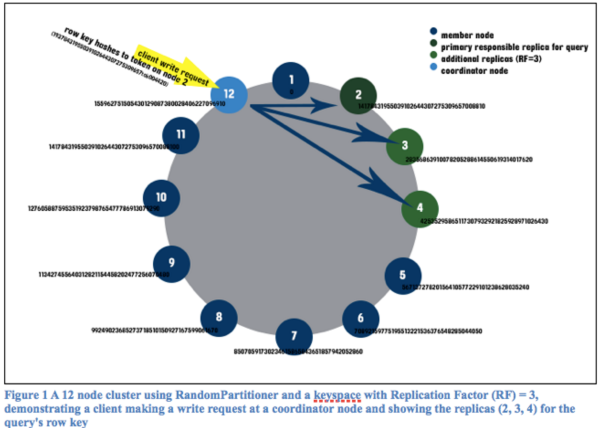
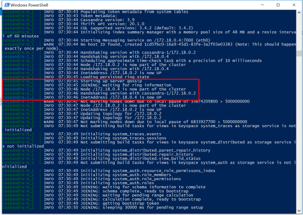


<head>
<style type="text/css">
.auto-style1 {
	margin-left: 40px;
}
</style>
</head>

<div id="TOC"></div>

<h1>INTRODUCTION</h1>
<p>A while ago I worked on a project that used this tech stack</p>
<ul>
	<li><strong>Akka HTTP : </strong>(actually we used Spray.IO but it is 
	practically the same thing for the purpose of this article). For those that 
	don't know what Akka HTTP is, it is a simple Akka based framework that is 
	also able to expose a REST interface to communicate with the actor system</li>
	<li><strong>Cassandra database :</strong> Apache Cassandra is a free and 
	open-source distributed database management system designed to handle large 
	amounts of data across many commodity servers, providing high availability 
	with no single point of failure. Cassandra offers robust support for 
	clusters spanning multiple datacenters,with asynchronous masterless 
	replication allowing low latency operations for all clients.</li>
</ul>
<p class="auto-style1">It is a multi node clutster</p>
<p class="auto-style1">&nbsp;</p>
<p>This was a pain to test, and we were always stepping on each others toes, as 
you can imagine running up a 5 node cluster of VMs just to satisy my each 
devekopers own testing needs was a bit much. So we ended up with some dedicated 
test environments, running 5 cassandra nodes. These was still a PITA to be 
honest. </p>
<p>This got me thinking perhaps I could use <a href="https://www.docker.com/">
Docker</a> to help me out here, perhaps I could run Cassandra in a
<a href="https://www.docker.com/">Docker</a> container, hell perhaps I could 
even run my own code that uses Cassandra in a <a href="https://www.docker.com/">
Docker</a> container, and just point my UI at the Akk HTTP REST server running 
in <a href="https://www.docker.com/">Docker</a>. mmmmm</p>
<p>I started to dig around, and of course this is entirely possible (otherwise I 
would not be writing this article now would I).</p>
<p>This is certainly not a new thing here for Codeproject, there are numerous
<a href="https://www.docker.com/">Docker</a> articles,&nbsp; but I never found 
one that talked about Cassandra, so I thought why not write another one.</p>
<p>&nbsp;</p>
<h1>WHERE IS THE CODE</h1>
<p>The code can be located here :
<a href="https://github.com/sachabarber/DockerExamples">
https://github.com/sachabarber/DockerExamples</a></p>
<p>&nbsp;</p>
<p>&nbsp;</p>


<h1>SOME DOCKER FUNDAMENTALS</h1>
<p>This section will outline some of the fundamental ideas behind Docker</p>
<p>&nbsp;</p>
<h2>Images</h2>
<p>Perhaps the most important idea to get your head around with docker is that 
of images/image layers, and how these relate to containers.
<a href="https://www.docker.com/">Docker</a> works on the idea of a layered 
images. Where each image is a new layer over the one beneath.</p>
<p>For example consider the following diagram</p>
<p></p>
<p>&nbsp;</p>
<p>There are 3 images in play here</p>
<ul>
	<li>Ubuntu</li>
	<li>Emacs</li>
	<li>Apache</li>
</ul>
<p>Each of these layers wil build upon the one below. What do I mean by build 
apon? Quite simply it will add/remove/alter files on the
<a href="https://www.docker.com/">Docker</a> filesystem. It is by altering the
<a href="https://www.docker.com/">Docker</a> filesystem in this way that we are 
able to build up very complex images. This example would end up with a container 
(that could be used as a new image) that would be capable of running Apache&nbsp; 
+ Emacs on Ubuntu.</p>
<p>&nbsp;</p>
<p>Ok, so that's cool, but where do we get these images?</p>
<p>As I stated above <a href="https://www.docker.com/">Docker</a> has a vibrant 
community behind it, and it also has a cloud repository of base images that
<a href="https://www.docker.com/">Docker</a> or the community have created. </p>
<p>For example say I wanted to use cassandra, I would simple got to
<a href="https://hub.docker.com/">https://hub.docker.com/</a> and search for 
cassandra, which would give me a page like this</p>
<p>&nbsp;</p>
<p><a href="DockerHub.png" target="_blank"></a></p>
<p><i>CLICK FOR BIGGER IMAGE</i>&nbsp;</p>
<p>In this case there is an official version from the cassandra maintainers, but 
sometimes you can expect this to be community based.</p>
<p>In some cases where an official image is available you may get some good 
documentation telling you things like</p>
<ul>
	<li>What ports are exposes</li>
	<li>What environment variables are / could be used</li>
	<li>How to link containers</li>
</ul>
<p>&nbsp;</p>
<h2>Volumes</h2>
<p>Occasionally a bit of software you use will want to use a certain directory 
for some purpose or another, most typically config, or logging. It would be nice 
to expose this outside of a container, such that it could map to some physical 
location on the host, or even possibly be shared between containers.</p>
<p>&nbsp;</p>
<p>Luckily <a href="https://www.docker.com/">Docker</a> has your back here and 
allows you to create a mapping from container path to host path. You can read 
more about this at this link :
<a href="https://docs.docker.com/engine/tutorials/dockervolumes/#data-volumes">
data-volumes</a></p>
<p>Here is what the offical Docker docs have to say about volumes</p>
<p><em>A data volume is a specially-designated directory within one or more 
containers that bypasses the Union File System. Data volumes provide several 
useful features for persistent or shared data:<br>Volumes are initialized when a 
container is created. If the container’s base image contains data at the 
specified mount point, that existing data is copied into the new volume upon 
volume initialization. (Note that this does not apply when mounting a host 
directory.)</em></p>
<ul>
	<li><em>Data volumes can be shared and reused among containers.</em></li>
	<li><em>Changes to a data volume are made directly.</em></li>
	<li><em>Changes to a data volume will not be included when you update an 
	image.</em></li>
	<li><em>Data volumes persist even if the container itself is deleted.</em></li>
	<li><em>Data volumes are designed to persist data, independent of the 
	container’s life cycle. Docker therefore never automatically deletes volumes 
	when you remove a container, nor will it “garbage collect” volumes that are 
	no longer referenced by a container.ost </em></li>
</ul>
<p>An example of creating a volume that will be mapped from a container to a 
host file system path would be as follows</p>
<pre>
$ docker run -d -P --name web -v /src/webapp:/webapp training/webapp python app.py
</pre>
<p><i>This command mounts the host directory, /src/webapp, into the container at /webapp. If the path /webapp already exists inside the container’s image, the /src/webapp mount overlays but does not remove the pre-existing content. Once the mount is removed, the content is accessible again. </i></p>
<p><i>This is consistent with the expected behavior of the mount command.
The container-dir must always be an absolute path such as /src/docs. The host-dir can either be an absolute path or a name value. If you supply an absolute path for the host-dir, Docker bind-mounts to the path you specify. If you supply a name, Docker creates a named volume by that name.</i></p>
<p>&nbsp;</p>
<h2>Environment Variables&nbsp;</h2>
<p>Some software may also be setup to use environment variables. Luckily docker 
supports this both in the <a href="https://www.docker.com/">Docker</a> command 
line and the richer <a href="https://docs.docker.com/compose/">Docker Compose</a> 
file syntax, which we will see more of later.</p>
<p>This is an example of setting an environment variable from the <a href="https://www.docker.com/">Docker</a> 
command line, we will see a <a href="https://docs.docker.com/compose/">Docker Compose</a> 
file example later. The <code>-e CASSANDRA_BROADCAST_ADDRESS=10.42.42.42</code> 
is setting an environement variable that will be passed to the container being 
created by the image here.</p>
<pre>
$ docker run --name some-cassandra -d -e CASSANDRA_BROADCAST_ADDRESS=10.42.42.42 -p 7000:7000 cassandra:tag</pre>
<p>&nbsp;</p>
<p>&nbsp;</p>
<h2>Linking </h2>
<p> <a href="https://www.docker.com/">Docker</a> comes with this idea of linking 
containers together. But why would you want that? So lets imagine we have a web 
site that is able to run in a <a href="https://www.docker.com/">Docker</a> 
container and it talks to a MySQL database that is also able to run in a <a href="https://www.docker.com/">Docker</a> 
container. We could either run the MySQL database container up first, grab the 
IP address of it, and mangle the deployment of the web site some how to let is 
know about the IP address of the database container, or we could use <a href="https://www.docker.com/">Docker</a> 
linking.</p>
<p> &nbsp;</p>
<p>This is an example of setting an environment variable from the <a href="https://www.docker.com/">Docker</a> 
command line, we will see a <a href="https://docs.docker.com/compose/">Docker Compose</a> 
file example later. The <code>--link some-cassandra:cassandra</code> is linking 
this new container creation request to an existing container called "cassandra". </p>
<pre>
$ docker run --name some-cassandra2 -d --link some-cassandra:cassandra cassandra:tag</pre>
<p>&nbsp;</p>
<p>In a nutshell <a href="https://www.docker.com/">Docker</a> linking allows to 
express dependencies from one container to another, this may be done on the 
command line or via <strong>docker-compose</strong>.This article will discuss 
the <strong>docker-compose</strong> mechanism.</p>
<p>Another feature of linking is that you may run interactive commands, say some 
sort of SQL command line against an existing container. For example Apache 
Cassandra comes with a command line utility called CQL which you can use to do 
database command line stuff. Here is an example of running that against a 
container that is already running Apache Cassandra.</p>
<pre>
$ docker run -it --link some-cassandra:cassandra --rm cassandra cqlsh cassandra</pre>
<p>where some-cassandra is the name of your original Cassandra Server container</p>
<p>&nbsp;</p>
<h2>Networks</h2>
<p>It would be a rare bit of software that did not need to expose a port or IP 
address to accept input from the user. Luckily this is entirely possible with <a href="https://www.docker.com/">Docker</a>. 
In fact <a href="https://www.docker.com/">Docker</a> offers very rich networking 
capabilities, which i'm sorry to say is outside the scope of this article. We 
will look at how to expose ports from container to host. However for a deeper 
walk through I urge you to read more on this subject (it is a big subject) :
<a href="https://docs.docker.com/engine/userguide/networking/">
https://docs.docker.com/engine/userguide/networking/</a></p>
<p>&nbsp;</p>
<h2>Dockerfile</h2>
<p>Docker can build images automatically by reading the instructions from a 
Dockerfile. A Dockerfile is a text document that contains all the commands a 
user could call on the command line to assemble an image. Using docker build 
users can create an automated build that executes several command-line 
instructions in succession.</p>
<p>&nbsp;</p>
<h2>Docker Compose</h2>
<p>Whilst the <a href="https://www.docker.com/">Docker</a> line does allow you 
to do pretty much anything with containers/images, sometimes what you are 
looking for is a more contained descciption of you software stack. Something 
like:</p>
<ul>
	<li>I have a web site</li>
	<li>It has 2 databases that is depends on</li>
	<li>I want the logs to be exposed here and here</li>
	<li>I need these ports open</li>
</ul>
<p>And you would like to bring all of this up in one go. That sounds ideal. 
Fortunately <a href="https://www.docker.com/">Docker</a> allows this with 
something called <a href="https://docs.docker.com/compose/">Docker Compose</a> 
which allows us to describe ALL our requirements in one file, and bring it all 
up in one go. We will be seeing 3 exanokes of this in the rest of the article</p>
<p>&nbsp;</p>
<p>&nbsp;</p>

<h1>3 EXAMPLES</h1>
<p>Ok so I now know that there is a place where I can grab images, well that's 
grand, but how do I get <strong>MY </strong>software to run with one of these 
images?</p>
<p>We will examine this question using several examples, as shown below.</p>
<p>I have decided to split the examples into 3, ranging from very simple, to 
medium to complex. However the principles we use for all of them is the same, we 
just build up the example a bit more each time</p>
<p>&nbsp;</p>
<p>But before we get into the examples there are a couple of common points which 
they all share</p>
<p>&nbsp;</p>
<h3>Akka Http</h3>
<p>They all use Akka HTTP, which as I have stated above is a Akka based REST 
api. A bare bones Akka Http application may look something like this (this is 
with a single default GET&nbsp; route)</p>
<pre lang="scala">
package SAS

import akka.actor.ActorSystem
import akka.event.Logging
import akka.http.scaladsl.Http
import akka.http.scaladsl.server.Directives._
import akka.stream.ActorMaterializer
import com.typesafe.config.ConfigFactory


object DockerAkkaHttpMicroService {
  implicit val system = ActorSystem()
  implicit val executor = system.dispatcher
  implicit val materializer = ActorMaterializer()

  def main(args: Array[String]): Unit = {
    val config = ConfigFactory.load()
    val logger = Logging(system, getClass)

    val routes =
      get {
        pathSingleSlash {
          complete {
            "Hello, World from Code!"
          }
        }
      }

    Http().bindAndHandle(routes, config.getString("http.address"), config.getInt("http.port"))
  }
}
</pre>
<p>In fact this is the entire codebase for the 1st example below. If one was to 
open the source code associated with example 1 in a Scala/SBT capable editor and 
run this, and then use something like <strong>Postman</strong> to test the 
route, we would see something like this</p>
<p>&nbsp;</p>
<p><a href="Postman1.png" target="_blank"></a></p>
<p><i>CLICK FOR BIGGER IMAGE</i>&nbsp;</p>
<p>So that is what we expect a running Akka Http application to be able to do, 
basically response with some viable response to a REST call.</p>
<p>&nbsp;</p>
<h3>Scala / SBT</h3>
<p>I am using a scala/sbt stack, as such I will be using SBT to build the code 
that goes with this article.</p>
<p>&nbsp;</p>
<h3>Fat Jar</h3>
<p>I also create a fat Jar. Which means the end result once all the dependencies 
have been added in which be a single .jar file. The SBT file for example 1 looks 
like this, the others are similar just with different dependencies</p>
<pre lang="scala">
name := "SimpleAkkaHttpService"
version := "1.0"
scalaVersion := "2.11.7"
scalacOptions := Seq("-unchecked", "-deprecation", "-encoding", "utf8")
assemblyJarName in assembly := "SimpleAkkaHttpService.jar"

libraryDependencies ++= {
  val akkaStreamVersion = "1.0"
  Seq(
    "com.typesafe.akka" %% "akka-actor" % "2.3.12",
    "com.typesafe.akka" % "akka-stream-experimental_2.11" % akkaStreamVersion,
    "com.typesafe.akka" % "akka-http-core-experimental_2.11" % akkaStreamVersion,
    "com.typesafe.akka" % "akka-http-experimental_2.11" % akkaStreamVersion
  )
}

Revolver.settings
</pre>
<h3>&nbsp;</h3>
<h3>Dockerfile</h3>
<p>Each of the examples will be expected to run MY OWN code in a container. </p>
<p>So how does that happen exactly, I know we talked about layers and being able 
to build on top of layers of other images. Yes spot on, its exactly that, we use 
a base image and then add files on top of that.</p>
<p>In my case the dockerfile contains the way in which to build a new image for 
MY OWN container (ie my own software) by building a new layer on top of an 
existing image.</p>
<p>In my case the base image needs several things</p>
<ul>
	<li>Scala</li>
	<li>SBT</li>
</ul>
<p>Again <a href="https://hub.docker.com/">DockerHub</a> has your back here.&nbsp; 
Lets have a look at the dockerfile for example 1.</p>
<pre>
FROM hseeberger/scala-sbt
MAINTAINER sacha barber <sacha.barber@gmail.com>
ENV REFRESHED_AT 2017-07-02

ADD . /root
WORKDIR /root

EXPOSE 8080
ENTRYPOINT ["java", "-jar", "SimpleAkkaHttpService.jar"]
</pre>
<p>What is this saying?</p>
<p>&nbsp;</p>
<p>Well when you break it down its actually quite digestable, all of these are 
standard Dockerfile commands</p>
<ol>
	<li><strong>FROM</strong> uses the name of the base image (scala + SBT) so 
	this one from <a href="https://hub.docker.com/">DockerHub</a>:
	<a href="https://hub.docker.com/r/hseeberger/scala-sbt/">
	https://hub.docker.com/r/hseeberger/scala-sbt/</a></li>
	<li><strong>MAINTAINER</strong> me</li>
	<li><strong>ENV REFRESHED AT</strong> date</li>
	<li><strong>ADD</strong> we add files to the base image, we use root</li>
	<li><strong>WORKDIR</strong> we set working directory to be the root</li>
	<li><strong>EXPOSE</strong> we want the port 8080 (this was what our Akka 
	Http app exposed) from the new container we are building</li>
	<li><strong>ENTRYPOINT</strong> we set to the app that will run when we 
	start the container and what command it will run, in this case java runs our 
	fat jar</li>
</ol>
<p>&nbsp;</p>
<p>All of the examples have a VERY simliar dockerfile, so I will not cover it 
again, just wanted to go through one in a bit of detail</p>
<p>&nbsp;</p>
<p>We also make use of another bit of the docker toolkit, namely another command 
line tool called &quot;<strong>docker-compose</strong>&quot;. d<strong>ocker-compose</strong> 
is meant for assembling more and more elaborate interconnected setups that you 
wish to containerise.</p>
<p>There is a convention that the <strong>docker-compose</strong> file should be 
called &quot;<strong>docker-compose.yml</strong>&quot;.</p>
<p>Here is the complete docker-compose.yml file for the 1st example</p>
<pre>
webservice:
  build: .
  ports:
    - "8080:8080"</pre>
<p>So what is this saying?</p>
<p>As before if we take it step by step it is quite easy to understand. It names 
the service for the Akka Http REST &quot;webservice&quot; and uses the dockerfile in the 
current location to bring up the Akka Http web service inside a container, and 
it exposes port 8080 of the container to the hosts 8080 port.</p>
<p>If we run this command line in a directory that has the 3 files 
SimpleAkkaHttpService.jar/Dockerfile/ this docker-compose.yml in it</p>
<pre>
docker-compose up --build
</pre>
<p>We can then try the web site again to see if it works.</p>
<p>&nbsp;</p>
<p>&nbsp;</p>
<p><a href="Postman1.png" target="_blank"></a></p>
<p><i>CLICK FOR BIGGER IMAGE</i>&nbsp;</p>
<p>Ha it works.</p>
<p>I know what you are all thinking that I just copied the image from above, 
well I did, but trust me this does work.</p>
<p>Full instructions are in the README.md in Git repo anyway</p>
<p>Believe it or not with these few bits of knowledge we are able to build 
pretty elaborate setups, as we will see in the 3 examples below.</p>
<p>&nbsp;</p>

<h2>Simple Akka HTTP Example</h2>
<p>This is as above, we just used the 1st example to pave the way for other 
examples. Next time we will build apon what we have an add a dependency on 
MySQL.</p>
<p>&nbsp;</p>

<h2>Simple Akka HTTP + MySQL Example</h2>
<p>This example will build upon what we have just done, with the main difference 
being that this time we will be running a Akka Htpp REST API that will talk to a 
SINGLE MySQL server and will obtain some of the static data that is avaiable 
within a MySQL server. This will introduce 3 new <a href="https://docs.docker.com/compose/">Docker Compose</a> 
concepts, namely </p>
<ul>
	<li>volumes</li>
	<li>environment variables</li>
	<li>linking</li>
	<li>multiple services starting in unison</li>
</ul>
<p>&nbsp;</p>
<p>Here is the actual code we are going to trying to run. </p>
<pre lang="scala">
package SAS

import akka.actor.ActorSystem
import akka.event.Logging
import akka.http.scaladsl.Http
import akka.http.scaladsl.server.Directives._
import akka.stream.ActorMaterializer
import com.typesafe.config.ConfigFactory
import java.sql.{ResultSet, Connection, DriverManager}


object DockerAkkaHttpMicroServiceUsingMySql {
  implicit val system = ActorSystem()
  implicit val executor = system.dispatcher
  implicit val materializer = ActorMaterializer()

  def main(args: Array[String]): Unit = {

    val config = ConfigFactory.load()
    val logger = Logging(system, getClass)


    def getSomeMySqlData() : String = {
      // connect to the database named "mysql" on port 3306 of localhost
      val url = "jdbc:mysql://db:3306/mysql"
      val driver = "com.mysql.jdbc.Driver"
      val username = "root"
      val password = "sacha"
      var connection:Connection = null
      var returnVal=""
      try {
        Class.forName(driver)
        connection = DriverManager.getConnection(url, username, password)
        val statement = connection.createStatement
        val rs = statement.executeQuery("SELECT table_name, table_schema FROM INFORMATION_SCHEMA.TABLES WHERE TABLE_TYPE = 'BASE TABLE';")

        realize(rs).take(10).foreach(v=&gt;
        {
          val valuesList = v.values.toList
          val tableName = valuesList(0)
          val tableSchema = valuesList(1)
          returnVal = returnVal + s"tableName= $tableName, tableSchema= $tableSchema\r\n"
        })
      } catch {
        case e: Exception =&gt; e.printStackTrace
      }
      connection.close
      returnVal
    }


    def buildMap(queryResult: ResultSet,
                 colNames: Seq[String]): Option[Map[String, Object]] =
      if (queryResult.next())
        Some(colNames.map(n =&gt; n -&gt; queryResult.getObject(n)).toMap)
      else
        None

    def realize(queryResult: ResultSet): Vector[Map[String, Object]] = {
      val md = queryResult.getMetaData
      val colNames = (1 to md.getColumnCount) map md.getColumnName
      Iterator.continually(buildMap(queryResult, colNames))
        .takeWhile(!_.isEmpty).map(_.get).toVector
    }

    val routes =
      get {
        pathSingleSlash {
          complete {
            getSomeMySqlData()
          }
        }
      }

    Http().bindAndHandle(routes,
      config.getString("http.address"),
      config.getInt("http.port"))

  }
}
</pre>
<p>Notice the connection to the MySQL database uses this line</p>
<pre lang="scala">
val url = "jdbc:mysql://db:3306/mysql"
</pre>
<p>&nbsp;</p>
<p>Where does that come from, well if we examine the actual <a href="https://docs.docker.com/compose/">Docker Compose</a> 
file, we may get to understand this. Here is the <a href="https://docs.docker.com/compose/">Docker Compose</a> 
file for this example</p>
<pre>
version: '2'

services:
    db:
        image: mysql:latest
        volumes:
            - db_data:/var/lib/mysql
        restart: always
        environment:
            MYSQL_ROOT_PASSWORD: sacha
            MYSQL_USER: sacha
            MYSQL_PASSWORD: sacha
        ports:
            - "3306:3306"
    webservice:
        build: .
        ports:
            - "8080:8080"
        depends_on:
            - db
volumes:
    db_data:
</pre>
<p>There are several things to talk about here, namely</p>
<p>&nbsp;</p>
<p><strong>Volumes</strong></p>
<p>The "db" project (MySQL see the mySql image (again from <a href="https://hub.docker.com/">DockerHub</a>)) 
uses a volume to map from the MySQL world to the host container</p>
<p><strong>Environment variables</strong></p>
<p>The "db" project (MySQL see the mySql image (again from <a href="https://hub.docker.com/">DockerHub</a>)) 
requires us to set some environment variables. We already saw how to set those 
from the command line but above shows you how to set them in a 
docker-compose.yaml file</p>
<p><strong>Linking</strong></p>
<p>As we&nbsp; already saw this time we want to run not only the Akka Http REST 
api but also the MySQL database each in its own container. We obviously want to 
connect to the MySQL database from the Akka Http api code. We saw something like 
this in the Akka Http code base&nbsp;</p>
<pre lang="scala">
val url = "jdbc:mysql://db:3306/mysql"
</pre>
<p>So what this is doing is once the containers are up (there is a dependency 
declared in the docker-commpose.yaml file, see the <strong>depends_on</strong>) 
the database is avaiable using the name "db" on the port that it exposes "3306" 
in this case. So we simply use that in our connection string. And since&nbsp;<a href="https://www.docker.com/">Docker</a> 
takes care of the dependency for us, this is ok, we know the "db" will be 
started before the Akka Http REST service.</p>
<p>&nbsp;</p>
<p>&nbsp;</p>
<p><strong>Multiple services starting in unison</strong></p>
<p>This is the first time we have seen more than one service starting up. This 
time we have 2</p>
<ul>
	<li>db : The MySQL service</li>
	<li>webservice : The Akka Http service</li>
</ul>
<p>Each with their own setup for the container requirements they need.</p>
<p>As before we need to ensure that the Dockerfile/docker-compose.yaml and the 
SimpleAkkaHttpServiceWithMySql.jar (as specified in the Dockerfile and build.sbt 
files) are in the same directory.</p>
<p>Then issue this command</p>
<pre>
docker-compose up --build</pre>
<p>If all goes well we should see something like this</p>
<p><a href="ComposeMySQL.png" target="_blank"></a></p>
<p><em>CLICK FOR BIGGER IMAGE</em></p>
<p>Another thing we can now do is open another command line and issue this 
command to examine the running containers</p>
<p><a href="ComposeMySQL2.png" target="_blank"></a></p>
<p><em>CLICK FOR BIGGER IMAGE</em></p>
<p>&nbsp;</p>
<p>Now that we are happy its all up and running we can just use postman to test 
the REST API.</p>
<p><a href="ComposeMySQL3.png" target="_blank"></a></p>
<p>&nbsp;</p>
<p>See how it grabs this metadata from the running MySQL database. Pretty cool 
huh. We are now able to setup fairly complex software requirements, the topics I 
have just covered should get you a good way to easing your development woes. It 
has certainly worked out well for me.</p>
<p>&nbsp;</p>

<h2>Simple Akka HTTP + Cassandra Scalable Cluster Example</h2>
<p>The last example I wanted to cover in someways just builds on what we have 
above in example 2, there is only one more new concept to cover, but its a nice 
one. But before we go into that I just wanted to let you know why I chose to 
pick Apache Cassandra as the final example.</p>
<p>Apache Cassandra is a multinode distributed database, when new nodes may come 
and go from what is known as the "cassandra ring".The ring is really a 
distributed hash map, however Cassandra has one more interesting feature in that 
it uses a GOSSIP protocol to ensure that each node knows and talks to each 
other. Its how consensus is gathered, you need to reach a consensum to assume 
that a bit of data is really persisted.</p>
<p>This image may help</p>
<p><a href="Cass1.png" target="_blank"></a></p>

<p><em>CLICK FOR BIGGER IMAGE</em></p>
<p>Some tables/queries that you design may ONLY work if you have the right 
number of nodes (usually odd so that consensus may be reached).</p>
<p>As before here is the code that we are trying to run for this example</p>
<pre lang="scala">
package SAS

import akka.actor.ActorSystem
import akka.event.Logging
import akka.http.scaladsl.Http
import akka.http.scaladsl.server.Directives._
import akka.stream.ActorMaterializer
import com.datastax.driver.core.{Session, ResultSet, Cluster}
import com.typesafe.config.ConfigFactory
import scala.collection.JavaConversions._


object DockerAkkaHttpMicroServiceUsingCassandra {
  implicit val system = ActorSystem()
  implicit val executor = system.dispatcher
  implicit val materializer = ActorMaterializer()

  def main(args: Array[String]): Unit = {

    val config = ConfigFactory.load()
    val logger = Logging(system, getClass)

    def getSomeCassandraData() : String = {

      var cluster:Cluster = null
      var returnVal="getSomeCassandraData\r\n"
      try {
        cluster = Cluster.builder()
          .addContactPoint("cassandra-1")
          .withPort(9042)
          .build()
        val session = cluster.connect()


        returnVal = returnVal + "Before keyspace\r\n"
        createKeySpace(session)
        returnVal = returnVal + "After keyspace\r\n"

        createTable(session)
        returnVal = returnVal + "After table\r\n"

        seedData(session)
        returnVal = returnVal + "After seeding\r\n"

        returnVal = returnVal + "\r\n"
        val rs = session.execute("select category, points, lastname from dockercassandra.cyclist_category")

        val iter = rs.iterator()
        while (iter.hasNext()) {
          if (rs.getAvailableWithoutFetching() == 100 && !rs.isFullyFetched())
            rs.fetchMoreResults()
          val row = iter.next()
            returnVal = returnVal + s"category= ${row.getString("category")}, " +
              s"points= ${row.getInt("points")}, lastname= ${row.getString("lastname")}\r\n"

        }
      }
      catch {
        case e: Exception =&gt; {
          e.printStackTrace
          returnVal = e.printStackTrace().toString
        }
      } finally {
        if (cluster != null) cluster.close()
      }
      returnVal
    }

    def createKeySpace(session : Session) : Unit = {
      session.execute(
        """CREATE KEYSPACE IF NOT EXISTS DockerCassandra
            WITH replication = {
                 'class':'SimpleStrategy',
                 'replication_factor' : 3
               };""")
    }


    def createTable(session : Session) : Unit = {
      session.execute(
        """CREATE TABLE IF NOT EXISTS dockercassandra.cyclist_category (
             category text,
             points int,
             lastname text,
             PRIMARY KEY (category, points))
          WITH CLUSTERING ORDER BY (points DESC);""")
    }

    def seedData(session : Session) : Unit = {
      session.execute("TRUNCATE dockercassandra.cyclist_category;")
      session.execute("INSERT INTO dockercassandra.cyclist_category (category, points, lastname) VALUES ('cat1', 15, 'barber');");
      session.execute("INSERT INTO dockercassandra.cyclist_category (category, points, lastname) VALUES ('cat2', 25, 'smith');");
      session.execute("INSERT INTO dockercassandra.cyclist_category (category, points, lastname) VALUES ('cat3', 45, 'evans');");
      session.execute("INSERT INTO dockercassandra.cyclist_category (category, points, lastname) VALUES ('cat4', 65, 'harth');");
    }

    val routes =
      get {
        pathSingleSlash {
          complete {
            getSomeCassandraData()
            //"getting cass"
          }
        }
      }

    Http().bindAndHandle(routes,
      config.getString("http.address"),
      config.getInt("http.port"))

  }
}
</pre>
<p>&nbsp;</p>
<p>As before thanks to what we now know about linking we can use the "cassandra-1" 
container and also use its port.</p>
<p>However ith such a possibly large database with many nodes, how would we even 
express that in a <a href="https://docs.docker.com/compose/">Docker Compose</a> 
file, surely we don't need to express 5 or 7 or 9 seperate Cassandra services in 
the <a href="https://docs.docker.com/compose/">Docker Compose</a> 
file do we?</p>
<p>No actually we do not, <a href="https://www.docker.com/">Docker</a> has a 
nice helpful thing we can do here. Lets look at the&nbsp;<a href="https://docs.docker.com/compose/">Docker Compose</a> 
file first though, here it is</p>
<pre>
version: '2'

services:
    cassandra-1:
        image: cassandra:latest
        command: /bin/bash -c "echo ' -- Pausing to let system catch up ...' && sleep 10 && /docker-entrypoint.sh cassandra -f"
        expose:
            - 7000
            - 7001
            - 7199
            - 9042
            - 9160
       # volumes: # uncomment if you desire mounts, also uncomment cluster.sh
       #   - ./data/cassandra-1:/var/lib/cassandra:rw

    cassandra-N:
        image: cassandra:latest
        command: /bin/bash -c "echo ' -- Pausing to let system catch up ...' && sleep 30 && /docker-entrypoint.sh cassandra -f"
        environment:
            - CASSANDRA_SEEDS=cassandra-1
        links:
            - cassandra-1:cassandra-1
        expose:
            - 7000
            - 7001
            - 7199
            - 9042
            - 9160
        # volumes: # uncomment if you desire mounts, also uncomment cluster.sh
        #   - ./data/cassandra-2:/var/lib/cassandra:rw


    webservice:
        build: .
        ports:
            - "8080:8080"
        depends_on:
            - cassandra-1
</pre>
<p>It is basically what we have seen (more of the same) the only difference 
being that we now have this new container "cassandra-N" which links through to 
the main "cassandra-1" container, and it also sets a Cassandra specific 
environment variable to ensure the ring is formed.</p>
<p>As before we need to ensure that the Dockerfile/docker-compose.yaml and the 
SimpleAkkaHttpServiceWithCassandra.jar (as specified in the Dockerfile and build.sbt 
files) are in the same directory.</p>
<p>Then issue this command</p>
<pre>
docker-compose up --build</pre>
<p>It would all work out fine, as shown below</p>
<p>&nbsp;</p>
<p><a href="Cass2.png" target="_blank"></a></p>
<p><em>CLICK FOR BIGGER IMAGE</em></p>
<p>As can be seen when we run our old friend postman</p>
<p>&nbsp;</p>
<p><a href="Cass3.png" target="_blank"></a></p>
<p><em>CLICK FOR BIGGER IMAGE</em></p>
<p>This is all good and works fine, but what if we want more nodes in our ring? 
Well it turns out <a href="https://docs.docker.com/compose/">Docker Compose</a>&nbsp; 
lets us do this, we simple use this magic command instead notice the "<strong>scale</strong>" 
part.</p>
<pre>docker-compose scale webservice=1 cassandra-1=1 cassandra-N=4</pre>
<p>&nbsp;</p>
<p>&nbsp;</p>
<p>&nbsp;</p>
<p>&nbsp;</p>
<h1>FURTHER READINGS</h1>
<p>Other codeproject articles</p>
<ul>
	<li>
	<a href="https://www.codeproject.com/Articles/1094603/Learn-Docker-by-building-a-Microservice">
	https://www.codeproject.com/Articles/1094603/Learn-Docker-by-building-a-Microservice</a> 
	by Dave Kerr. I would strongly recommend that you read this, this is 
	certainly one of the better Docker articles written, and I am personally a 
	very big fan of Daves articles, he puts in the miles, and it shows</li>
</ul>
<p>These are also fairly essential reading if you ask me</p>
<ul>
	<li><a href="https://docs.docker.com/compose/">Docker Compose</a></li>
	<li><a href="https://www.docker.com/">Docker</a></li>
	<li>
	<a href="http://doc.akka.io/docs/akka-stream-and-http-experimental/1.0-M2/scala/http/">
	Akka Http</a></li>
</ul>
<p>&nbsp;</p>
<h1>CONCLUSION</h1>
<p>As always if you like what you see here, a vote/comment is most welcome</p>
